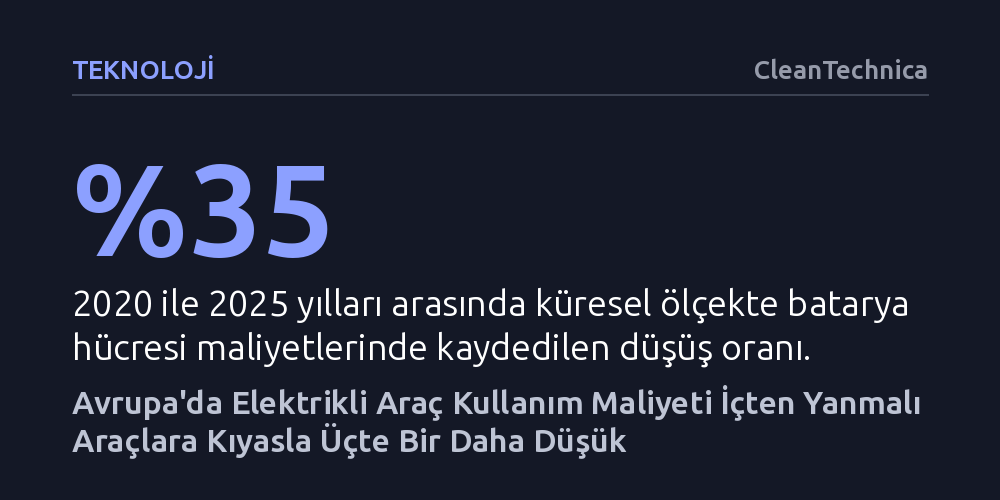

TEKNOLOJI · CleanTechnica · 2026-09-08
ICCT raporuna göre Avrupa'da elektrikli araçların işletme maliyeti, düşen batarya fiyatları ve artan akaryakıt giderleri sayesinde geleneksel araçlardan üçte bir daha ucuz. Halka açık istasyonlarda şarj eden sürücüler bile içten yanmalı araçlara kıyasla yüzde 28 tasarruf sağlıyor.
Elektrikli araçların yalnızca çevreci bir alternatif olmadığını, hızla düşen batarya maliyetleriyle birlikte artık içten yanmalı araçlardan çok daha ekonomik ve erişilebilir bir seçeneğe dönüştüğünü gösteriyor.

Uluslararası Temiz Ulaşım Konseyi'nin (ICCT) yayımladığı kapsamlı rapora göre, Avrupa'da tam elektrikli bir otomobil kullanmanın maliyeti geleneksel benzinli veya dizel araçlara kıyasla üçte bir oranında daha düşük seyrediyor. Bu hesaplama yalnızca evde şarj imkânı bulunan kullanıcılar için geçerli değil; aracını düzenli olarak kamuya açık ticari şarj istasyonlarında dolduran sürücüler dahi içten yanmalı araç sahiplerine göre yüzde 28 daha az harcama yapıyor. Elektrikli ve fosil yakıtlı araçlar arasındaki bu işletme gideri uçurumu, enerji piyasalarındaki dalgalanmalarla birlikte tüketicilerin doğrudan bütçesine yansıyor.
Bu tasarruf makasının açılmasında, 2026 yılı başında yaşanan jeopolitik gerilimlerin tetiklediği akaryakıt dalgalanmaları belirleyici bir rol oynadı. İçten yanmalı motora sahip araçların enerji maliyetleri yalnızca birkaç ay içinde yüzde 12 ila 36 oranında artarken, elektrikli araçların şarj maliyetleri büyük ölçüde durağan kaldı. Araştırmanın başyazarı Marie Rajon Bernard'ın vurguladığı gibi, "Avrupa'daki elektrikli araç sürücüleri benzinli araç sahiplerine göre yaklaşık üçte bir daha az ödüyor" ve bu durum otomobil pazarının geri dönülemez biçimde tek bir yöne doğru kaymasını açıklıyor.
Elektrikli araçların yaygınlaşmasındaki en büyük engel uzun süre yüksek etiket fiyatları olarak görüldü. Ancak ICCT verileri, bu tablonun hızla değiştiğini kanıtlıyor. Küresel ölçekte batarya hücresi maliyetleri 2020 ile 2025 yılları arasında yüzde 35 oranında geriledi. Bu keskin maliyet düşüşü, Avrupa'nın en büyük otomotiv pazarı olan Almanya'da elektrikli binek araçların satın alma maliyetlerinin enflasyon ve artan menzil gibi donanım özellikleri hesaba katıldığında yüzde 18 oranında ucuzlamasını sağladı. Aynı dönemde içten yanmalı araç fiyatlarının yüzde 2 artış göstermesi, iki teknoloji arasındaki fiyat makasını tarihte ilk kez kapattı.
Almanya'da incelenen 100 bin araçlık veri seti, 2025 yılı itibarıyla elektrikli otomobillerin en popüler üç araç segmentinde benzinli muadilleriyle aynı fiyat seviyesine ulaştığını gösteriyor. Üstelik pazardaki model çeşitliliği de son beş yılda dört katına çıktı. ICCT Avrupa Direktörü Peter Mock, araç fiyatlarının henüz batarya maliyetleri kadar hızlı düşmediğine dikkat çekerek, önümüzdeki yıllarda elektrikli araçların daha da ucuzlaması için ciddi bir potansiyel bulunduğunu ve üreticilerin yatırımlarını geri çekmek yerine derinleştirmesi gerektiğini belirtiyor.
Rapordaki en çarpıcı bulgulardan biri, elektrifikasyonun yalnızca binek otomobillerle sınırlı kalmayıp ağır ticari taşımacılığı da dönüştürmeye başlaması. Avrupa Birliği genelinde uzun yol elektrikli kamyonlarının dizel kamyonlarla toplam sahip olma maliyetinde 2030 yılına kadar eşitlenmesi beklenirken, Almanya bu eşiği şimdiden aşmış durumda. Elektrikli kamyonlara uygulanan otoyol geçiş ücreti muafiyetleri sayesinde, Almanya'da elektrikli bir kamyonu satın alma ve işletme maliyeti dizele kıyasla yüzde 11 daha düşük gerçekleşiyor.
Mali avantajların ötesinde, çevresel ve halk sağlığı kazanımları da raporda geniş yer buluyor. Yaşam döngüsü analizlerine göre elektrikli otomobiller, benzinli araçlara kıyasla yüzde 73 daha az sera gazı salımı yapıyor; uzun yol elektrikli kamyonlarında ise bu tasarruf yüzde 86'ya ulaşıyor. Geleneksel içten yanmalı araçların neden olduğu partikül madde, ozon ve azot dioksit gibi kirleticilerin 2024 yılında Avrupa'da 74 bin erken ölüme ve 11 bin çocukluk çağı astım vakasına yol açtığı düşünüldüğünde, elektrifikasyonun doğrudan bir kamu sağlığı meselesi olduğu görülüyor.
Tüm bu somut ekonomik ve çevresel avantajlara rağmen, Avrupa genelinde yeşil politikalara yönelik siyasi bir direnç yükseliyor. Özellikle otomotiv devi Volkswagen'in 100 bin çalışanını işten çıkarmayı planladığını ve Almanya'daki dört fabrikasını kapatmayı değerlendirdiğini açıklaması, elektrikli araç teşviklerini geri çekmek isteyen çevrelerin elini güçlendirdi. Ancak uzmanlar, rekabetin giderek kızıştığı küresel pazarda geleneksel teknolojilere geri dönmenin Avrupa otomotiv sanayisi için yıkıcı sonuçlar doğuracağı konusunda uyarıyor.
Rapor ayrıca, geçiş sürecinde bir köprü olarak sunulan şarj edilebilir hibrit (PHEV) araçlara ilişkin ciddi bir yanılgıyı gözler önüne seriyor. Laboratuvar ortamındaki tip onay testleri ile gerçek sürüş koşulları arasında devasa bir uçurum bulunuyor. Sürücülerin araçları beklenenden çok daha az şarj etmesi nedeniyle, hibrit araçların gerçek emisyonları resmi katalog değerlerinin ortalama 4,6 katı çıkıyor. Bu durum, hibritlerin iddia edildiği gibi gerçek bir emisyon tasarrufu sağlamadığını ve tek gerçekçi çıkış yolunun tam elektrikli dönüşüm olduğunu ortaya koyuyor.